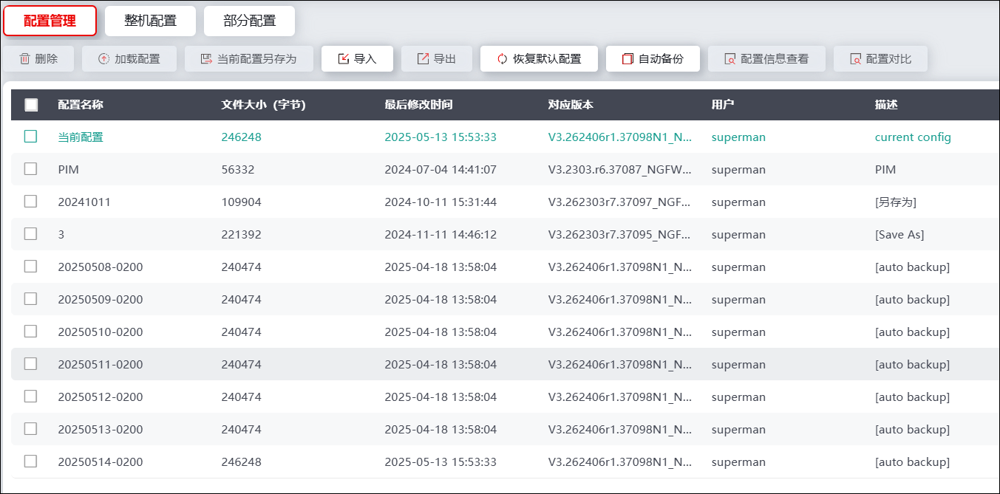
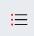
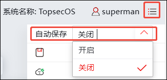
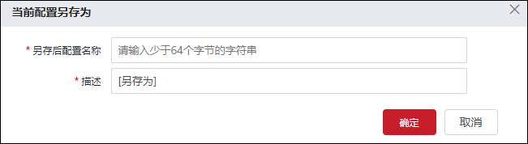
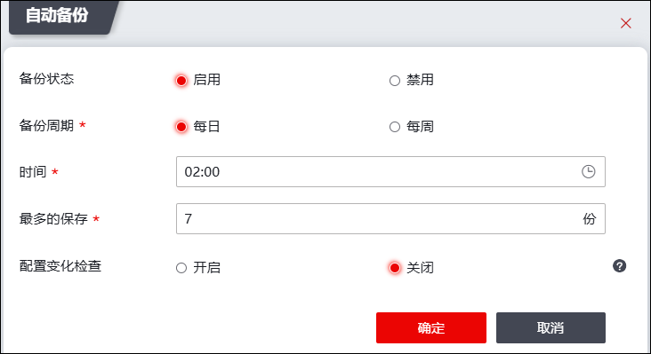
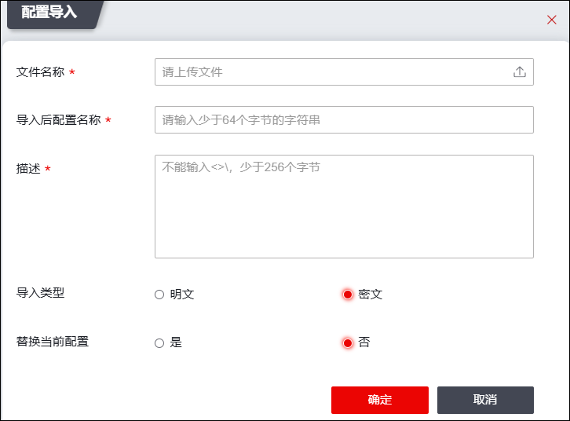
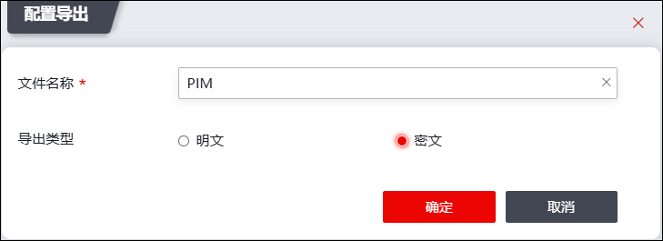
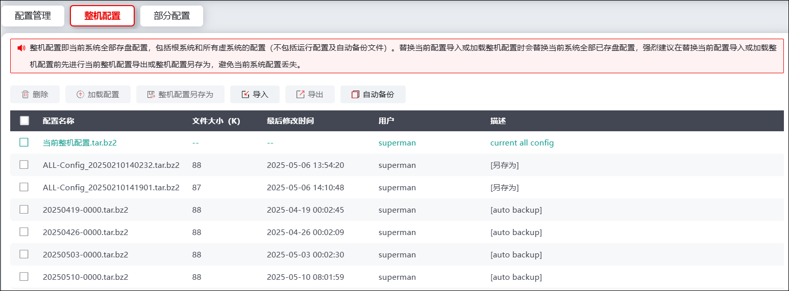
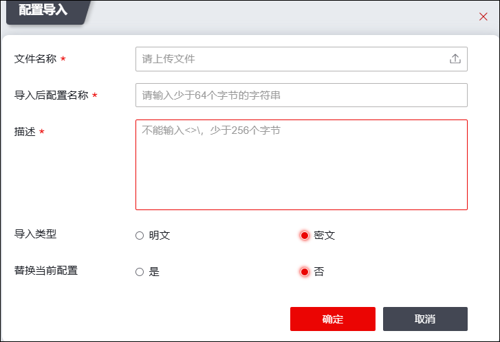
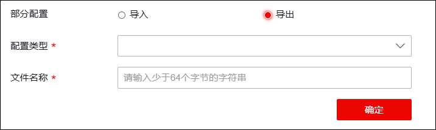

NGFW的配置信息保存在配置文件中，设备中可同时存在多个配置文件，但是同一时间只有一个生效。设备中存在以下几类配置信息。
Ø出厂配置：设备在出厂时，带有基本功能的配置信息。配置文件损坏时，可使用出厂配置正常启动。
Ø启动配置：设备在启动时，自动加载的配置文件，如果设备未找到启动配置文件加载出厂配置。
Ø当前配置：设备当前正在运行的配置，包括设备的启动配置及管理员新增的配置信息。如果不保存当前配置，设备重启后，会丢失当前配置。
系统支持配置文件的备份、替换和删除等功能，可大大降低管理员批量配置设备的工作量。另外，管理员可通过导入不同配置文件实现设备在不同网络中的配置，自由切换NGFW在网络环境中的功能，并可在设备配置出现问题时帮助管理员轻松将配置恢复到正常状态。
l配置管理
| 步骤1 | 选择 > 配置 > ，激活“配置管理”页签，如下图所示。 |

| 步骤2 | 加载配置。 |
勾选指定配置文件，点击【加载配置】按钮，可加载更新该配置文件。当前配置的文件不可加载。
| 步骤3 | 自动保存配置 |
点击 

| 步骤4 | 备份系统运行配置文件。 |
Ø手动另存为
1）勾选指定配置文件，点击“当前配置另存为”，弹窗如下图所示。

2）输入另存的配置文件文件名和描述信息，再点击【确定】按钮，即可将系统当前运行配置文件备份到设备中。
Ø自动备份
1）点击“自动备份”，弹窗如下图所示。

设置是否启用配置备份功能，设置备份时间、备份数量，以及是否开启配置变化检测。自动备份功能默认开启。
2）点击【确定】按钮，启用设置的自动备份功能。
| 步骤5 | 导入配置文件。 |
1）点击“导入”，弹出“配置导入”窗口，如下图所示。

在导入配置文件时，各项参数的具体说明如下表所示。
参数 |
说明 |
|---|---|
文件名称 |
选择配置文件。点击【上传】按钮，在管理主机中选择配置文件。 |
导入后配置名称 |
输入导入后的配置文件名称， |
描述 |
输入配置文件的必要描述信息。 |
导入类型 |
选择明文导入文件或者密文导入文件。 |
替换当前的系统配置 |
如果勾选“替换当前的系统配置”该项表示将该导入的配置文件作为系统的运行配置文件。 说明： HA启动时不允许该操作，勾选后可以正常导入文件，但不能替换当前配置。 |
2）点击【确定】按钮，完成配置导入。
| 步骤6 | 导出配置文件。 |
1）选择一个或多个系统中存储的配置文件，点击“导出”，如下图所示。

2）输入导出文件名称，选择导出类型。点击【确定】按钮，完成将系统中存储的配置文件导出至管理主机中。
| 步骤7 | 恢复设备出厂配置。 |
点击“恢复默认”，在弹出的提示窗口中，点击【确定】按钮，恢复出厂设置。
| 步骤8 | 配置信息查看 |
勾选指定配置文件，点击“配置信息查看”，在弹窗中查看该配置文件信息。
| 步骤9 | 配置对比 |
勾选两个配置文件，点击“配置对比”，在弹窗中查看两个配置文件的对比信息。
l整机配置
| 步骤1 | 选择 > 配置 > 如下图所示。 |

整机配置即当前系统全部配置（不包括自动备份文件）。整机配置导入会替换当前系统全部已存盘配置，强烈建议在“整机配置导入”前先进行“整机配置导出”，避免当前系统配置丢失。
| 步骤2 | 整机导入，选择“导入”，可导入配置信息，如下图所示。 |

配置参数说明如下。
参数 |
说明 |
|---|---|
文件名称 |
设置上传文件，点击图标，选择本地文件上传到系统。 |
导入后配置名称 |
设置导入后配置名称。 说明： 输入少于64个字节的字符串。 |
描述 |
设置描述信息，不能输入<>\，少于256个字节。 |
导入类型 |
可选项：明文、密文 |
替换当前配置 |
设置是否替换当前配置，点击“是”，可设置是否覆盖根系统管理员。 |
设置完成点击【确定】按钮，完成配置导入设置。
| 步骤3 | 整机导出，选择“导出”，选择导出类型，可导出整机配置。 |
l部分配置
| 步骤1 | 选择 > 配置 > 如下图所示。 |

| 步骤2 | 部分导入。选择“导入”，点击“”，上传需要导入的部分配置文件。点击【确定】按钮，完成配置。 |